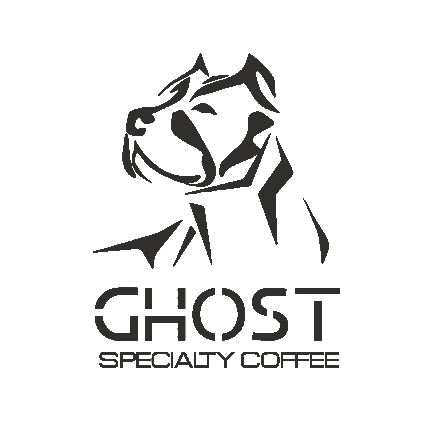
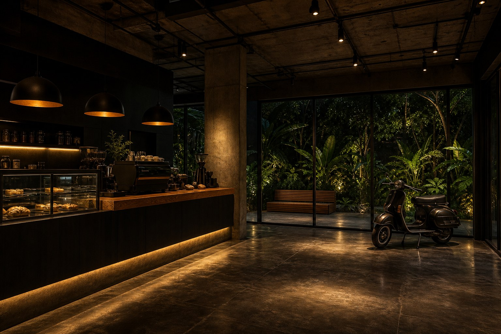

Barra
Elegancia en cada extracción
Espresso, V60, Chemex y cold brew bajo luz cálida. Métodos visibles y notas de cata en cada servicio.

Del grano al ritual
En Ghost no vendemos solo una bebida: curamos origen, controlamos la tostión y servimos con transparencia en barra abierta. Cada etapa tiene nombre, temperatura y tiempo — porque la especialidad se demuestra, no se anuncia.

Nuestra tienda · Cali
Barra de madera oscura y concreto pulido bajo lámparas cúpula. Vitrina iluminada, extracción visible y un patio verde al fondo — la tienda física de Ghost en Cali.
Experiencia
Tres pilares que definen cómo vivimos el café en Ghost — sin atajos ni concesiones.
Elegancia en cada extracción
Espresso, V60, Chemex y cold brew bajo luz cálida. Métodos visibles y notas de cata en cada servicio.
Artesanal en Cali
Control de curva por lote, perfil documentado y desgasificación antes de servir.
Colombia · Microlotes
Huila, Nariño, Cauca, Tolima y más. Territorio, productor y proceso en cada bolsa.
Historia
Ghost conecta el origen con la taza. Curamos café de especialidad de toda Colombia con trazabilidad y presencia de marca — elegancia que no necesita gritar.
Ven a vivir la experiencia: luz cálida, barra abierta y café de especialidad sin atajos.